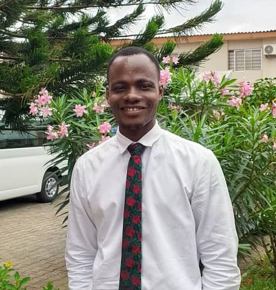

About Me
My name is DaberechI, I am a student of Brigham Young University Idaho, pursing a Bachelor's in Software Development, with an emphasis on Web Development. I am 28yrs, and I love the gosple of Jesus Christ and its teaching that bring men peae and comfort with a focus on becoming beter disciples of the Savior.
Lagos, Nigeria

Nigeria, located in West Africa, has over 220 million people representing diverse ethnic groups and cultures. Known as the "Giant of Africa," Nigeria boasts a rich history and heritage, encompassing over 250 ethnic groups, including the Yoruba, Hausa-Fulani, and Igbo. Its vibrant economy, driven by oil exports, agriculture, and a burgeoning tech scene, makes it a regional powerhouse. Lagos, its largest city, is a bustling metropolis and cultural hub. Nigeria's vibrant music, Nollywood film industry, and colorful festivals reflect its dynamic culture and resilience, making it a prominent player on the African stage.